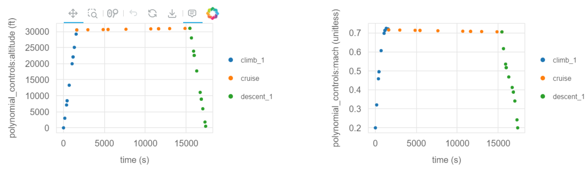

Optimizing the Mission Profile of a Conventional Aircraft#
Building upon our previous example, this notebook introduces more complexity into the Aviary optimization process. Please see the simple mission example if you haven’t already.
Increasing Complexity in Phase Information#
We will now modify the phase_info object from our prior example by increasing num_segments to 3 and setting optimize_mach to True in each of the three phases.
This means that we’ll query the aircraft performance at more points along the mission and also give the optimizer the freedom to choose an optimal Mach profile.
Note
We are still using a polynomial_control_order of 1, which means that the optimal Mach profiles for each phase will be linear (straight lines).
Later in this example, we increase this order which will allow the optimizer to choose a more complex Mach profile.
phase_info = {
'pre_mission': {'include_takeoff': False, 'optimize_mass': True},
'climb_1': {
'subsystem_options': {'core_aerodynamics': {'method': 'computed'}},
'user_options': {
'optimize_mach': True,
'optimize_altitude': False,
'polynomial_control_order': 1,
'num_segments': 3,
'order': 3,
'solve_for_distance': False,
'initial_mach': (0.2, 'unitless'),
'final_mach': (0.72, 'unitless'),
'mach_bounds': ((0.18, 0.74), 'unitless'),
'initial_altitude': (0.0, 'ft'),
'final_altitude': (30500.0, 'ft'),
'altitude_bounds': ((0.0, 31000.0), 'ft'),
'throttle_enforcement': 'path_constraint',
'fix_initial': True,
'constrain_final': False,
'fix_duration': False,
'initial_bounds': ((0.0, 0.0), 'min'),
'duration_bounds': ((27.0, 81.0), 'min'),
},
'initial_guesses': {'time': ([0, 54], 'min')},
},
'cruise': {
'subsystem_options': {'core_aerodynamics': {'method': 'computed'}},
'user_options': {
'optimize_mach': True,
'optimize_altitude': False,
'polynomial_control_order': 1,
'num_segments': 3,
'order': 3,
'solve_for_distance': False,
'initial_mach': (0.72, 'unitless'),
'final_mach': (0.72, 'unitless'),
'mach_bounds': ((0.7, 0.74), 'unitless'),
'initial_altitude': (30500.0, 'ft'),
'final_altitude': (31000.0, 'ft'),
'altitude_bounds': ((30000.0, 31500.0), 'ft'),
'throttle_enforcement': 'boundary_constraint',
'fix_initial': False,
'constrain_final': False,
'fix_duration': False,
'initial_bounds': ((27.0, 81.0), 'min'),
'duration_bounds': ((85.5, 256.5), 'min'),
},
'initial_guesses': {'time': ([54, 171], 'min')},
},
'descent_1': {
'subsystem_options': {'core_aerodynamics': {'method': 'computed'}},
'user_options': {
'optimize_mach': True,
'optimize_altitude': False,
'polynomial_control_order': 1,
'num_segments': 3,
'order': 3,
'solve_for_distance': False,
'initial_mach': (0.72, 'unitless'),
'final_mach': (0.2, 'unitless'),
'mach_bounds': ((0.18, 0.74), 'unitless'),
'initial_altitude': (31000.0, 'ft'),
'final_altitude': (500.0, 'ft'),
'altitude_bounds': ((0.0, 31500.0), 'ft'),
'throttle_enforcement': 'path_constraint',
'fix_initial': False,
'constrain_final': True,
'fix_duration': False,
'initial_bounds': ((112.5, 337.5), 'min'),
'duration_bounds': ((26.5, 79.5), 'min'),
},
'initial_guesses': {'time': ([225, 53], 'min')},
},
'post_mission': {
'include_landing': False,
'constrain_range': True,
'target_range': (1915, 'nmi'),
},
}
Running Aviary with Updated Parameters#
Let’s run the Aviary optimization with our updated phase_info object in the same way as before.
import aviary.api as av
prob = av.run_aviary(
'models/test_aircraft/aircraft_for_bench_FwFm.csv',
phase_info,
optimizer='SLSQP',
make_plots=True,
)
/home/runner/work/Aviary/Aviary/aviary/subsystems/aerodynamics/aerodynamics_builder.py:134: UserWarning: The 'solve_alpha' flag has been set, but is not used for FLOPS-based aerodynamics.
warnings.warn(
/usr/share/miniconda/envs/test/lib/python3.12/site-packages/openmdao/solvers/linear/linear_rhs_checker.py:177: SolverWarning:DirectSolver in 'traj.phases.cruise.indep_states' <class StateIndependentsComp>: 'rhs_checking' is active but no redundant adjoint dependencies were found, so caching has been disabled.
/usr/share/miniconda/envs/test/lib/python3.12/site-packages/openmdao/solvers/linear/linear_rhs_checker.py:177: SolverWarning:DirectSolver in 'traj.phases.descent_1.indep_states' <class StateIndependentsComp>: 'rhs_checking' is active but no redundant adjoint dependencies were found, so caching has been disabled.
/usr/share/miniconda/envs/test/lib/python3.12/site-packages/openmdao/recorders/sqlite_recorder.py:231: UserWarning:The existing case recorder file, /home/runner/work/Aviary/Aviary/aviary/docs/examples/aircraft_for_bench_FwFm_out/problem_history.db, is being overwritten.
Optimization terminated successfully (Exit mode 0)
Current function value: 2.4776520445788455
Iterations: 10
Function evaluations: 10
Gradient evaluations: 10
Optimization Complete
-----------------------------------
/usr/share/miniconda/envs/test/lib/python3.12/site-packages/openmdao/core/driver.py:144: OMDeprecationWarning:boolean evaluation of DriverResult is temporarily implemented to mimick the previous `failed` return behavior of run_driver.
Use the `success` attribute of the returned DriverResult object to test for successful driver completion.
Now that we’ve run Aviary, we can look at the results.
Open up the automatically generated traj_results_report.html and scroll through it to visualize the results.
Here are the altitude and Mach profiles:

We note two major changes compared to our first example.
The first is that we have many more points where the flight dynamics were evaluated because we increased num_segments to 3.
This means that we have more points shown on the resulting plots.
The second is that the optimizer chose the optimal Mach profile.
Again, each phase’s Mach profile is constrained to be linear because we set polynomial_control_order to 1.
However, we see that the optimizer chose to decrease the Mach number during the cruise-climb segment to minimize fuel burn.
Note
Remember, we did not allow the optimizer to control the altitude profile, so that remains fixed.
Let’s take a look at the optimization objective, mission:summary:fuel_burned:
print(prob.get_val(av.Mission.Summary.FUEL_BURNED, units='kg')[0])
9877.663519358643
We can print fuel_burned in pounds easily, thanks to OpenMDAO’s automatic unit conversion feature:
print(prob.get_val(av.Mission.Summary.FUEL_BURNED, units='lb')[0])
21776.520445788454
Modifying the Aircraft Configuration#
Next, we’ll modify the aircraft configuration by decreasing the wing aspect ratio by 0.2.
This results in a less slender wing, which will increase the induced drag.
We’ve made this change and have a modified aircraft data file called modified_aircraft.csv.
Show code cell source
import csv
filename = 'models/test_aircraft/aircraft_for_bench_FwFm.csv'
filename = av.get_path(filename)
# Read the file
with open(filename, 'r') as file:
reader = csv.reader(file)
lines = list(reader)
# Find the index of the line containing 'aircraft:wing:span'
index = None
for i, line in enumerate(lines):
if 'aircraft:wing:aspect_ratio' in line:
index = i
break
# Modify the value in the line
if index is not None:
aspect_ratio = float(lines[index][1]) - 0.2
lines[index][1] = str(aspect_ratio)
# Write the modified content to a new CSV file
with open(new_filename, 'w', newline='') as file:
writer = csv.writer(file)
writer.writerows(lines)
Re-running the Optimization with Modified Aircraft#
Now, let’s re-run the optimization with the modified aircraft configuration.
We’ll use the same phase_info object as before, but we’ll change the input deck to point to our new aircraft file.
prob = av.run_aviary('modified_aircraft.csv', phase_info, optimizer='SLSQP', make_plots=True)
/home/runner/work/Aviary/Aviary/aviary/subsystems/aerodynamics/aerodynamics_builder.py:134: UserWarning: The 'solve_alpha' flag has been set, but is not used for FLOPS-based aerodynamics.
warnings.warn(
/usr/share/miniconda/envs/test/lib/python3.12/site-packages/openmdao/solvers/linear/linear_rhs_checker.py:177: SolverWarning:DirectSolver in 'traj.phases.cruise.indep_states' <class StateIndependentsComp>: 'rhs_checking' is active but no redundant adjoint dependencies were found, so caching has been disabled.
/usr/share/miniconda/envs/test/lib/python3.12/site-packages/openmdao/solvers/linear/linear_rhs_checker.py:177: SolverWarning:DirectSolver in 'traj.phases.descent_1.indep_states' <class StateIndependentsComp>: 'rhs_checking' is active but no redundant adjoint dependencies were found, so caching has been disabled.
Iteration limit reached (Exit mode 9)
Current function value: 2.4932837756435444
Iterations: 50
Function evaluations: 232
Gradient evaluations: 50
Optimization FAILED.
Iteration limit reached
-----------------------------------
/home/runner/work/Aviary/Aviary/aviary/interface/methods_for_level2.py:1983: UserWarning:
Aviary run failed. See the dashboard for more details.
warnings.warn('\nAviary run failed. See the dashboard for more details.\n')
/usr/share/miniconda/envs/test/lib/python3.12/site-packages/openmdao/core/driver.py:144: OMDeprecationWarning:boolean evaluation of DriverResult is temporarily implemented to mimick the previous `failed` return behavior of run_driver.
Use the `success` attribute of the returned DriverResult object to test for successful driver completion.
The case again converged in relatively few iterations. Let’s take a look at the fuel burn value:
print(prob.get_val(av.Mission.Summary.FUEL_BURNED, units='kg')[0])
9948.567858767037
As expected, it’s a bit higher than our prior run that had a larger aspect ratio.
Increasing the Polynomial Control Order#
Next, we’ll increase the polynomial_control_order to 3 for the climb and descent phases.
This means that the optimizer will be able to choose a cubic Mach profile per phase instead of a line.
We’ll use the original aircraft configuration for this run.
Note
We’ll use the IPOPT optimizer for this problem as it will handle the increased complexity better than SLSQP.
phase_info['climb_1']['user_options']['polynomial_control_order'] = 3
phase_info['cruise']['user_options']['polynomial_control_order'] = 1
phase_info['descent_1']['user_options']['polynomial_control_order'] = 3
prob = av.run_aviary(
'models/test_aircraft/aircraft_for_bench_FwFm.csv',
phase_info,
optimizer='IPOPT',
make_plots=True,
)
/home/runner/work/Aviary/Aviary/aviary/subsystems/aerodynamics/aerodynamics_builder.py:134: UserWarning: The 'solve_alpha' flag has been set, but is not used for FLOPS-based aerodynamics.
warnings.warn(
/usr/share/miniconda/envs/test/lib/python3.12/site-packages/openmdao/solvers/linear/linear_rhs_checker.py:177: SolverWarning:DirectSolver in 'traj.phases.cruise.indep_states' <class StateIndependentsComp>: 'rhs_checking' is active but no redundant adjoint dependencies were found, so caching has been disabled.
/usr/share/miniconda/envs/test/lib/python3.12/site-packages/openmdao/solvers/linear/linear_rhs_checker.py:177: SolverWarning:DirectSolver in 'traj.phases.descent_1.indep_states' <class StateIndependentsComp>: 'rhs_checking' is active but no redundant adjoint dependencies were found, so caching has been disabled.
/usr/share/miniconda/envs/test/lib/python3.12/site-packages/openmdao/recorders/sqlite_recorder.py:231: UserWarning:The existing case recorder file, /home/runner/work/Aviary/Aviary/aviary/docs/examples/aircraft_for_bench_FwFm_out/problem_history.db, is being overwritten.
Total number of variables............................: 70
variables with only lower bounds: 2
variables with lower and upper bounds: 68
variables with only upper bounds: 0
Total number of equality constraints.................: 62
Total number of inequality constraints...............: 26
inequality constraints with only lower bounds: 0
inequality constraints with lower and upper bounds: 26
inequality constraints with only upper bounds: 0
Number of Iterations....: 31
(scaled) (unscaled)
Objective...............: 2.4399625347506171e+00 2.4399625347506171e+00
Dual infeasibility......: 5.3272567394159259e-08 5.3272567394159259e-08
Constraint violation....: 3.1409181559390586e-11 3.1409181559390586e-11
Variable bound violation: 0.0000000000000000e+00 0.0000000000000000e+00
Complementarity.........: 9.0916068279718999e-08 9.0916068279718999e-08
Overall NLP error.......: 9.0916068279718999e-08 9.0916068279718999e-08
Number of objective function evaluations = 34
Number of objective gradient evaluations = 32
Number of equality constraint evaluations = 34
Number of inequality constraint evaluations = 34
Number of equality constraint Jacobian evaluations = 32
Number of inequality constraint Jacobian evaluations = 32
Number of Lagrangian Hessian evaluations = 0
Total seconds in IPOPT = 9.864
EXIT: Optimal Solution Found.
minimal_print is not available for this solution
Optimization Problem -- Optimization using pyOpt_sparse
================================================================================
Objective Function: _objfunc
Solution:
--------------------------------------------------------------------------------
Total Time: 9.8646
User Objective Time : 7.4642
User Sensitivity Time : 2.2754
Interface Time : 0.0802
Opt Solver Time: 0.0449
Calls to Objective Function : 35
Calls to Sens Function : 33
Objectives
Index Name Value
0 mission:objectives:fuel 2.439963E+00
Variables (c - continuous, i - integer, d - discrete)
Index Name Type Lower Bound Value Upper Bound Status
0 mission:design:gross_mass_0 c 5.714286E-05 9.060298E-01 1.000000E+30
1 mission:summary:gross_mass_0 c 5.714286E-05 9.060298E-01 1.000000E+30
2 traj.climb_1.t_duration_0 c 5.000000E-01 5.000015E-01 1.500000E+00
3 traj.climb_1.states:mass_0 c 0.000000E+00 7.191943E+00 1.000000E+17
4 traj.climb_1.states:mass_1 c 0.000000E+00 7.170816E+00 1.000000E+17
5 traj.climb_1.states:mass_2 c 0.000000E+00 7.148940E+00 1.000000E+17
6 traj.climb_1.states:mass_3 c 0.000000E+00 7.141411E+00 1.000000E+17
7 traj.climb_1.states:mass_4 c 0.000000E+00 7.115129E+00 1.000000E+17
8 traj.climb_1.states:mass_5 c 0.000000E+00 7.080061E+00 1.000000E+17
9 traj.climb_1.states:mass_6 c 0.000000E+00 7.069525E+00 1.000000E+17
10 traj.climb_1.states:mass_7 c 0.000000E+00 7.055025E+00 1.000000E+17
11 traj.climb_1.states:mass_8 c 0.000000E+00 7.035676E+00 1.000000E+17
12 traj.climb_1.states:mass_9 c 0.000000E+00 7.029647E+00 1.000000E+17
13 traj.climb_1.states:distance_0 c 0.000000E+00 1.401625E-02 1.000000E+15
14 traj.climb_1.states:distance_1 c 0.000000E+00 4.220495E-02 1.000000E+15
15 traj.climb_1.states:distance_2 c 0.000000E+00 5.275879E-02 1.000000E+15
16 traj.climb_1.states:distance_3 c 0.000000E+00 9.678232E-02 1.000000E+15
17 traj.climb_1.states:distance_4 c 0.000000E+00 1.656637E-01 1.000000E+15
18 traj.climb_1.states:distance_5 c 0.000000E+00 1.883451E-01 1.000000E+15
19 traj.climb_1.states:distance_6 c 0.000000E+00 2.210148E-01 1.000000E+15
20 traj.climb_1.states:distance_7 c 0.000000E+00 2.667981E-01 1.000000E+15
21 traj.climb_1.states:distance_8 c 0.000000E+00 2.814396E-01 1.000000E+15
22 traj.climb_1.controls:mach_0 c 3.600000E-01 4.000000E-01 1.480000E+00
23 traj.climb_1.controls:mach_1 c 3.600000E-01 9.514307E-01 1.480000E+00
24 traj.climb_1.controls:mach_2 c 3.600000E-01 1.302329E+00 1.480000E+00
25 traj.climb_1.controls:mach_3 c 3.600000E-01 1.400001E+00 1.480000E+00
26 traj.cruise.t_duration_0 c 5.000000E-01 1.378671E+00 1.500000E+00
27 traj.cruise.states:mass_0 c 0.000000E+00 6.951271E+00 1.000000E+17
28 traj.cruise.states:mass_1 c 0.000000E+00 6.844162E+00 1.000000E+17
29 traj.cruise.states:mass_2 c 0.000000E+00 6.810508E+00 1.000000E+17
30 traj.cruise.states:mass_3 c 0.000000E+00 6.686817E+00 1.000000E+17
31 traj.cruise.states:mass_4 c 0.000000E+00 6.518608E+00 1.000000E+17
32 traj.cruise.states:mass_5 c 0.000000E+00 6.465932E+00 1.000000E+17
33 traj.cruise.states:mass_6 c 0.000000E+00 6.391836E+00 1.000000E+17
34 traj.cruise.states:mass_7 c 0.000000E+00 6.290438E+00 1.000000E+17
35 traj.cruise.states:mass_8 c 0.000000E+00 6.258544E+00 1.000000E+17
36 traj.cruise.states:distance_0 c 0.000000E+00 5.754088E-01 1.000000E+15
37 traj.cruise.states:distance_1 c 0.000000E+00 9.809237E-01 1.000000E+15
38 traj.cruise.states:distance_2 c 0.000000E+00 1.109243E+00 1.000000E+15
39 traj.cruise.states:distance_3 c 0.000000E+00 1.584579E+00 1.000000E+15
40 traj.cruise.states:distance_4 c 0.000000E+00 2.240176E+00 1.000000E+15
41 traj.cruise.states:distance_5 c 0.000000E+00 2.447605E+00 1.000000E+15
42 traj.cruise.states:distance_6 c 0.000000E+00 2.741113E+00 1.000000E+15
43 traj.cruise.states:distance_7 c 0.000000E+00 3.145991E+00 1.000000E+15
44 traj.cruise.states:distance_8 c 0.000000E+00 3.274108E+00 1.000000E+15
45 traj.cruise.controls:mach_0 c 1.400000E+00 1.400001E+00 1.480000E+00 l
46 traj.cruise.controls:mach_1 c 1.400000E+00 1.400000E+00 1.480000E+00 l
47 traj.descent_1.t_duration_0 c 5.000000E-01 6.179850E-01 1.500000E+00
48 traj.descent_1.states:mass_0 c 0.000000E+00 6.254338E+00 1.000000E+17
49 traj.descent_1.states:mass_1 c 0.000000E+00 6.248928E+00 1.000000E+17
50 traj.descent_1.states:mass_2 c 0.000000E+00 6.247230E+00 1.000000E+17
51 traj.descent_1.states:mass_3 c 0.000000E+00 6.241101E+00 1.000000E+17
52 traj.descent_1.states:mass_4 c 0.000000E+00 6.233194E+00 1.000000E+17
53 traj.descent_1.states:mass_5 c 0.000000E+00 6.230893E+00 1.000000E+17
54 traj.descent_1.states:mass_6 c 0.000000E+00 6.227680E+00 1.000000E+17
55 traj.descent_1.states:mass_7 c 0.000000E+00 6.222957E+00 1.000000E+17
56 traj.descent_1.states:mass_8 c 0.000000E+00 6.221273E+00 1.000000E+17
57 traj.descent_1.states:distance_0 c 0.000000E+00 3.312484E+00 1.000000E+15
58 traj.descent_1.states:distance_1 c 0.000000E+00 3.359070E+00 1.000000E+15
59 traj.descent_1.states:distance_2 c 0.000000E+00 3.372684E+00 1.000000E+15
60 traj.descent_1.states:distance_3 c 0.000000E+00 3.419684E+00 1.000000E+15
61 traj.descent_1.states:distance_4 c 0.000000E+00 3.477251E+00 1.000000E+15
62 traj.descent_1.states:distance_5 c 0.000000E+00 3.493998E+00 1.000000E+15
63 traj.descent_1.states:distance_6 c 0.000000E+00 3.515639E+00 1.000000E+15
64 traj.descent_1.states:distance_7 c 0.000000E+00 3.540369E+00 1.000000E+15
65 traj.descent_1.states:distance_8 c 0.000000E+00 3.546580E+00 1.000000E+15
66 traj.descent_1.controls:mach_0 c 3.600000E-01 1.400000E+00 1.480000E+00
67 traj.descent_1.controls:mach_1 c 3.600000E-01 1.015228E+00 1.480000E+00
68 traj.descent_1.controls:mach_2 c 3.600000E-01 7.178231E-01 1.480000E+00
69 traj.descent_1.controls:mach_3 c 3.600000E-01 4.000000E-01 1.480000E+00
Constraints (i - inequality, e - equality)
Index Name Type Lower Value Upper Status Lagrange Multiplier (N/A)
0 mission:constraints:range_residual e 0.000000E+00 -2.273737E-14 0.000000E+00 9.00000E+100
1 gtow_constraint.GTOW e 0.000000E+00 0.000000E+00 0.000000E+00 9.00000E+100
2 link_climb_1_mass.mass e 0.000000E+00 -2.910383E-16 0.000000E+00 9.00000E+100
3 mission:constraints:mass_residual e 0.000000E+00 -5.820766E-16 0.000000E+00 9.00000E+100
4 traj.linkages.climb_1:mach_final|cruise:mach_initial e 0.000000E+00 0.000000E+00 0.000000E+00 9.00000E+100
5 traj.linkages.cruise:mach_final|descent_1:mach_initial e 0.000000E+00 0.000000E+00 0.000000E+00 9.00000E+100
6 traj.climb_1.mach[initial] e 2.000000E-01 2.000000E-01 2.000000E-01 9.00000E+100
7 traj.climb_1.collocation_constraint.defects:mass e 0.000000E+00 -1.548005E-16 0.000000E+00 9.00000E+100
8 traj.climb_1.collocation_constraint.defects:mass e 0.000000E+00 2.054158E-12 0.000000E+00 9.00000E+100
9 traj.climb_1.collocation_constraint.defects:mass e 0.000000E+00 8.752457E-12 0.000000E+00 9.00000E+100
10 traj.climb_1.collocation_constraint.defects:mass e 0.000000E+00 1.772572E-11 0.000000E+00 9.00000E+100
11 traj.climb_1.collocation_constraint.defects:mass e 0.000000E+00 2.484858E-11 0.000000E+00 9.00000E+100
12 traj.climb_1.collocation_constraint.defects:mass e 0.000000E+00 1.706484E-11 0.000000E+00 9.00000E+100
13 traj.climb_1.collocation_constraint.defects:mass e 0.000000E+00 7.882889E-12 0.000000E+00 9.00000E+100
14 traj.climb_1.collocation_constraint.defects:mass e 0.000000E+00 4.764325E-12 0.000000E+00 9.00000E+100
15 traj.climb_1.collocation_constraint.defects:mass e 0.000000E+00 2.277996E-12 0.000000E+00 9.00000E+100
16 traj.climb_1.collocation_constraint.defects:distance e 0.000000E+00 1.463496E-18 0.000000E+00 9.00000E+100
17 traj.climb_1.collocation_constraint.defects:distance e 0.000000E+00 -1.825330E-15 0.000000E+00 9.00000E+100
18 traj.climb_1.collocation_constraint.defects:distance e 0.000000E+00 -3.127428E-15 0.000000E+00 9.00000E+100
19 traj.climb_1.collocation_constraint.defects:distance e 0.000000E+00 -5.337340E-15 0.000000E+00 9.00000E+100
20 traj.climb_1.collocation_constraint.defects:distance e 0.000000E+00 -5.151092E-15 0.000000E+00 9.00000E+100
21 traj.climb_1.collocation_constraint.defects:distance e 0.000000E+00 -3.105255E-15 0.000000E+00 9.00000E+100
22 traj.climb_1.collocation_constraint.defects:distance e 0.000000E+00 -1.451089E-15 0.000000E+00 9.00000E+100
23 traj.climb_1.collocation_constraint.defects:distance e 0.000000E+00 -8.721803E-16 0.000000E+00 9.00000E+100
24 traj.climb_1.collocation_constraint.defects:distance e 0.000000E+00 -4.138513E-16 0.000000E+00 9.00000E+100
25 traj.cruise.collocation_constraint.defects:mass e 0.000000E+00 1.642879E-11 0.000000E+00 9.00000E+100
26 traj.cruise.collocation_constraint.defects:mass e 0.000000E+00 1.563785E-11 0.000000E+00 9.00000E+100
27 traj.cruise.collocation_constraint.defects:mass e 0.000000E+00 1.455226E-11 0.000000E+00 9.00000E+100
28 traj.cruise.collocation_constraint.defects:mass e 0.000000E+00 2.299241E-11 0.000000E+00 9.00000E+100
29 traj.cruise.collocation_constraint.defects:mass e 0.000000E+00 2.095091E-11 0.000000E+00 9.00000E+100
30 traj.cruise.collocation_constraint.defects:mass e 0.000000E+00 1.815731E-11 0.000000E+00 9.00000E+100
31 traj.cruise.collocation_constraint.defects:mass e 0.000000E+00 1.067896E-11 0.000000E+00 9.00000E+100
32 traj.cruise.collocation_constraint.defects:mass e 0.000000E+00 9.846095E-12 0.000000E+00 9.00000E+100
33 traj.cruise.collocation_constraint.defects:mass e 0.000000E+00 8.802854E-12 0.000000E+00 9.00000E+100
34 traj.cruise.collocation_constraint.defects:distance e 0.000000E+00 -1.880121E-15 0.000000E+00 9.00000E+100
35 traj.cruise.collocation_constraint.defects:distance e 0.000000E+00 -1.794560E-15 0.000000E+00 9.00000E+100
36 traj.cruise.collocation_constraint.defects:distance e 0.000000E+00 -1.675664E-15 0.000000E+00 9.00000E+100
37 traj.cruise.collocation_constraint.defects:distance e 0.000000E+00 -2.642959E-15 0.000000E+00 9.00000E+100
38 traj.cruise.collocation_constraint.defects:distance e 0.000000E+00 -2.418218E-15 0.000000E+00 9.00000E+100
39 traj.cruise.collocation_constraint.defects:distance e 0.000000E+00 -2.115266E-15 0.000000E+00 9.00000E+100
40 traj.cruise.collocation_constraint.defects:distance e 0.000000E+00 -1.212856E-15 0.000000E+00 9.00000E+100
41 traj.cruise.collocation_constraint.defects:distance e 0.000000E+00 -1.165631E-15 0.000000E+00 9.00000E+100
42 traj.cruise.collocation_constraint.defects:distance e 0.000000E+00 -1.033956E-15 0.000000E+00 9.00000E+100
43 traj.descent_1.mach[final] e 2.000000E-01 2.000000E-01 2.000000E-01 9.00000E+100
44 traj.descent_1.collocation_constraint.defects:mass e 0.000000E+00 1.054176E-12 0.000000E+00 9.00000E+100
45 traj.descent_1.collocation_constraint.defects:mass e 0.000000E+00 -1.143533E-11 0.000000E+00 9.00000E+100
46 traj.descent_1.collocation_constraint.defects:mass e 0.000000E+00 -1.743211E-11 0.000000E+00 9.00000E+100
47 traj.descent_1.collocation_constraint.defects:mass e 0.000000E+00 -2.963973E-11 0.000000E+00 9.00000E+100
48 traj.descent_1.collocation_constraint.defects:mass e 0.000000E+00 -3.140918E-11 0.000000E+00 9.00000E+100
49 traj.descent_1.collocation_constraint.defects:mass e 0.000000E+00 -1.389075E-11 0.000000E+00 9.00000E+100
50 traj.descent_1.collocation_constraint.defects:mass e 0.000000E+00 -5.726956E-12 0.000000E+00 9.00000E+100
51 traj.descent_1.collocation_constraint.defects:mass e 0.000000E+00 -2.391105E-12 0.000000E+00 9.00000E+100
52 traj.descent_1.collocation_constraint.defects:mass e 0.000000E+00 -1.787940E-13 0.000000E+00 9.00000E+100
53 traj.descent_1.collocation_constraint.defects:distance e 0.000000E+00 1.192717E-15 0.000000E+00 9.00000E+100
54 traj.descent_1.collocation_constraint.defects:distance e 0.000000E+00 -1.748258E-14 0.000000E+00 9.00000E+100
55 traj.descent_1.collocation_constraint.defects:distance e 0.000000E+00 -3.597370E-14 0.000000E+00 9.00000E+100
56 traj.descent_1.collocation_constraint.defects:distance e 0.000000E+00 -6.500363E-14 0.000000E+00 9.00000E+100
57 traj.descent_1.collocation_constraint.defects:distance e 0.000000E+00 -7.873893E-14 0.000000E+00 9.00000E+100
58 traj.descent_1.collocation_constraint.defects:distance e 0.000000E+00 -7.034820E-14 0.000000E+00 9.00000E+100
59 traj.descent_1.collocation_constraint.defects:distance e 0.000000E+00 -3.799697E-14 0.000000E+00 9.00000E+100
60 traj.descent_1.collocation_constraint.defects:distance e 0.000000E+00 -2.738351E-14 0.000000E+00 9.00000E+100
61 traj.descent_1.collocation_constraint.defects:distance e 0.000000E+00 -7.455367E-15 0.000000E+00 9.00000E+100
62 traj.climb_1.throttle[path] i 0.000000E+00 6.815913E-01 1.000000E+00 9.00000E+100
63 traj.climb_1.throttle[path] i 0.000000E+00 5.030957E-01 1.000000E+00 9.00000E+100
64 traj.climb_1.throttle[path] i 0.000000E+00 5.085216E-01 1.000000E+00 9.00000E+100
65 traj.climb_1.throttle[path] i 0.000000E+00 5.268627E-01 1.000000E+00 9.00000E+100
66 traj.climb_1.throttle[path] i 0.000000E+00 5.268627E-01 1.000000E+00 9.00000E+100
67 traj.climb_1.throttle[path] i 0.000000E+00 5.928249E-01 1.000000E+00 9.00000E+100
68 traj.climb_1.throttle[path] i 0.000000E+00 7.070927E-01 1.000000E+00 9.00000E+100
69 traj.climb_1.throttle[path] i 0.000000E+00 7.478084E-01 1.000000E+00 9.00000E+100
70 traj.climb_1.throttle[path] i 0.000000E+00 7.478084E-01 1.000000E+00 9.00000E+100
71 traj.climb_1.throttle[path] i 0.000000E+00 8.220685E-01 1.000000E+00 9.00000E+100
72 traj.climb_1.throttle[path] i 0.000000E+00 9.472318E-01 1.000000E+00 9.00000E+100
73 traj.climb_1.throttle[path] i 0.000000E+00 9.999980E-01 1.000000E+00 9.00000E+100
74 traj.cruise.throttle[initial] i 0.000000E+00 6.532217E-01 1.000000E+00 9.00000E+100
75 traj.cruise.throttle[final] i 0.000000E+00 6.175645E-01 1.000000E+00 9.00000E+100
76 traj.descent_1.throttle[path] i 0.000000E+00 2.259456E-01 1.000000E+00 9.00000E+100
77 traj.descent_1.throttle[path] i 0.000000E+00 1.862015E-01 1.000000E+00 9.00000E+100
78 traj.descent_1.throttle[path] i 0.000000E+00 1.570243E-01 1.000000E+00 9.00000E+100
79 traj.descent_1.throttle[path] i 0.000000E+00 1.486994E-01 1.000000E+00 9.00000E+100
80 traj.descent_1.throttle[path] i 0.000000E+00 1.486994E-01 1.000000E+00 9.00000E+100
81 traj.descent_1.throttle[path] i 0.000000E+00 1.195121E-01 1.000000E+00 9.00000E+100
82 traj.descent_1.throttle[path] i 0.000000E+00 6.383234E-02 1.000000E+00 9.00000E+100
83 traj.descent_1.throttle[path] i 0.000000E+00 3.657651E-02 1.000000E+00 9.00000E+100
84 traj.descent_1.throttle[path] i 0.000000E+00 3.657651E-02 1.000000E+00 9.00000E+100
85 traj.descent_1.throttle[path] i 0.000000E+00 2.959326E-06 1.000000E+00 9.00000E+100
86 traj.descent_1.throttle[path] i 0.000000E+00 1.924565E-06 1.000000E+00 9.00000E+100
87 traj.descent_1.throttle[path] i 0.000000E+00 4.824172E-02 1.000000E+00 9.00000E+100
--------------------------------------------------------------------------------
/usr/share/miniconda/envs/test/lib/python3.12/site-packages/openmdao/core/driver.py:144: OMDeprecationWarning:boolean evaluation of DriverResult is temporarily implemented to mimick the previous `failed` return behavior of run_driver.
Use the `success` attribute of the returned DriverResult object to test for successful driver completion.
And let’s print out the objective value, fuel burned:
print(prob.get_val(av.Mission.Summary.FUEL_BURNED, units='kg')[0])
9706.706778487396
The added flexibility in the mission allowed the optimizer to reduce the fuel burn compared to the linear Mach profile case.
Looking at the altitude and Mach profiles, we see that the optimizer chose a more subtly complex Mach profile:

Conclusion#
This example demonstrated how to use Aviary to optimize a more complex mission. We increased the number of segments in the mission, allowed the optimizer to choose the optimal Mach profile, and increased the polynomial control order to allow for more complex Mach profiles. We also modified the aircraft configuration to demonstrate how Aviary can be used to quickly evaluate the impact of design changes on the mission performance.